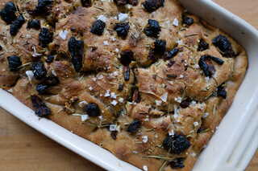
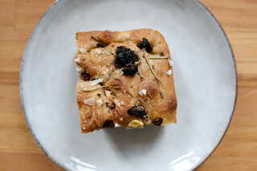
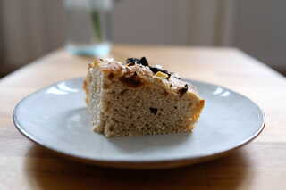

Gesunde Rezepte für Sauerteigbrot und Weiteres
Beim Füttern des Sauerteiges bleibt immer eine kleine Menge alter Sauerteig übrig, der nicht mehr für die neue Kultur benötigt wird, aber natürlich auch nicht weggeschmisse werden sollte. Daher sammle ich den alten Sauerteig in einem Glas im Kühlschrank und wenn eine geeignete Menge zusammengekomme ist, verarbeite ich ihn unterschiedlichen Gebäcken, wo es nicht unbedingt auf den perfekten Reifegrad des Sauerteigs ankommt. Heute habe ich daraus leckeres Focaccia gebacken. Die Zubereitung ist zudem sehr einfach: Alle Zutaten zu einem weichen Teig verkneten, in die Backform gegeben und im 24-48 Stunden Kühlschrank aufgehen lassen. Optimalerweise ist bei den Sauerteigresten auch junger, also 1-2 Tage alter Sauerteig dabei, da dieser die nötige Triebkraft hat.
Alle Zutaten bis auf die 4 El Olivenöl und die Toppings zu einem sehr weichen Teig verkneten, am Besten mit einer Küchenmaschine oder einem stabilen Holzlöffel.
Mit der Hälfte des restlichen Öls eine Backform (ca. 20x30 cm) gut einölen. Den Teig hineingeben und mit geölten Händen verteilen. Das restliche Öl darauf verteilen.
Hinweis: wieviel Olivenöl zum Fetten der Form und Bestreichen des Teiges verwendet wird, ist ganz dir überlassen. Je mehr Öl verwendet wird, desto knuspriger wird die Foccacia.
Die Form abgedeckt (z.B. mit geölter Frischhaltefolie oder geöltem Binenwachstuch) 24 bis 48 Stunden im Kühlschrank aufgehen lassen. Die genaue Dauer hängt von der Triebkraft des Sauerteigs und deiner verfügbaren Zeitspanne zum Backen ab.
Am Backtag den Ofen auf 240 Grad aufheizen. Die Foccacia mit dem Toppings dekorieren.
Wie auf den Bildern zu erkennen ist, habe ich getrocknete Tomaten verwendet. Dies kann ich nicht empfehlen, da diese schnell verbrennen. Getrocknete Tomaten daher vorher in Öl einlegen oder in den Teig hineindrücken. Gleiches gilt für frischen Knoblauch.
Nun den Teig mit geölten Fingern mehrmals eindrücken (ca. 20 mal). Dazu alle Finger ölen und mit "Spinnenhänden" alle Finger gleichzeitig in den Teig drücken. Dies einmal oben und einmal unten machen.
Die Focaccia bei 220 Grad 25 Minuten backen.
 